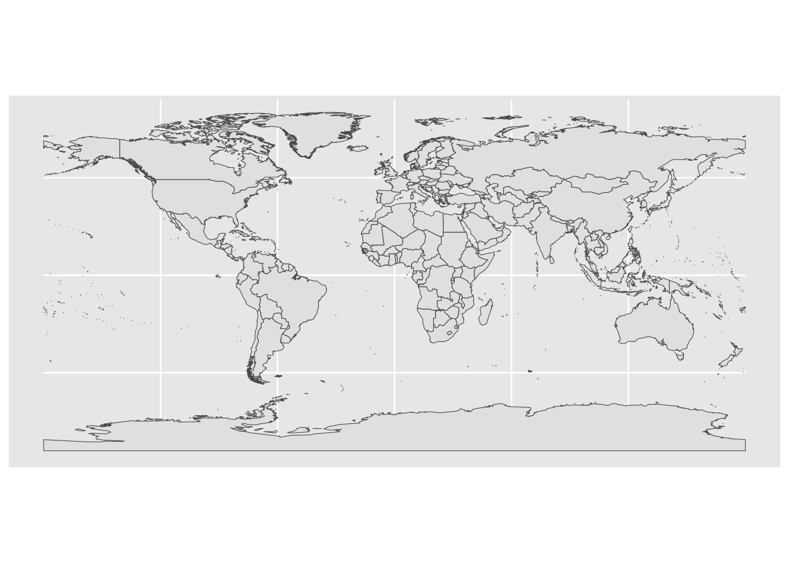

Coordinate Reference Systems (CRS)
1 Coordinate Reference Systems
“Map projections try to portray the surface of the earth or a portion of the earth on a flat piece of paper or computer screen. A coordinate reference system (CRS) then defines, with the help of coordinates, how the two-dimensional, projected map in your GIS is related to real places on the earth. The decision as to which map projection and coordinate reference system to use, depends on the regional extent of the area you want to work in, on the analysis you want to do and often on the availability of data.” From qgis.org
2 Call Libraries
Show the code
library(sf) # simple (spatial) featuresLinking to GEOS 3.10.2, GDAL 3.4.2, PROJ 8.2.1; sf_use_s2() is TRUEShow the code
library(ggplot2) # beautiful graphs3 Open wrld_simpl Shapefile
Show the code
world <- read_sf("../shapefiles/wrld_simpl/wrld_simpl.shp")
head(world) # show the top (head) of the dataSimple feature collection with 6 features and 10 fields
Geometry type: MULTIPOLYGON
Dimension: XY
Bounding box: xmin: -61.88722 ymin: -18.01639 xmax: 50.37499 ymax: 42.61805
Geodetic CRS: GCS_unknown
# A tibble: 6 × 11
FIPS ISO2 ISO3 UN NAME AREA REGION SUBREGION LON LAT
<chr> <chr> <chr> <int> <chr> <int> <int> <int> <dbl> <dbl>
1 AC AG ATG 28 Antigua and Barb… 44 19 29 -61.8 17.1
2 AG DZ DZA 12 Algeria 238174 2 15 2.63 28.2
3 AJ AZ AZE 31 Azerbaijan 8260 142 145 47.4 40.4
4 AL AL ALB 8 Albania 2740 150 39 20.1 41.1
5 AM AM ARM 51 Armenia 2820 142 145 44.6 40.5
6 AO AO AGO 24 Angola 124670 2 17 17.5 -12.3
# ℹ 1 more variable: geometry <MULTIPOLYGON [°]>4 Find Out the CRS of wrld_simpl
As with many global data sets (and many other data sets), wrld_simpl uses World Geodetic System 1984.
Show the code
st_crs(world)Coordinate Reference System:
User input: GCS_unknown
wkt:
GEOGCRS["GCS_unknown",
DATUM["World Geodetic System 1984",
ELLIPSOID["WGS 84",6378137,298.257223563,
LENGTHUNIT["metre",1]],
ID["EPSG",6326]],
PRIMEM["Greenwich",0,
ANGLEUNIT["Degree",0.0174532925199433]],
CS[ellipsoidal,2],
AXIS["longitude",east,
ORDER[1],
ANGLEUNIT["Degree",0.0174532925199433]],
AXIS["latitude",north,
ORDER[2],
ANGLEUNIT["Degree",0.0174532925199433]]]5 Plot The wrld_simpl Data
Show the code
ggplot(world) + geom_sf()